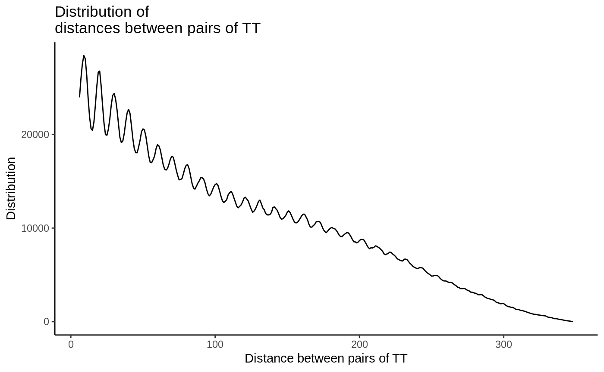
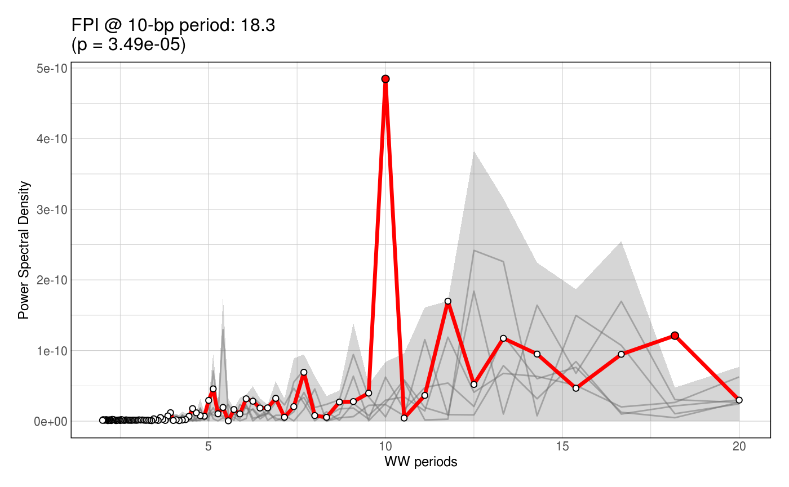
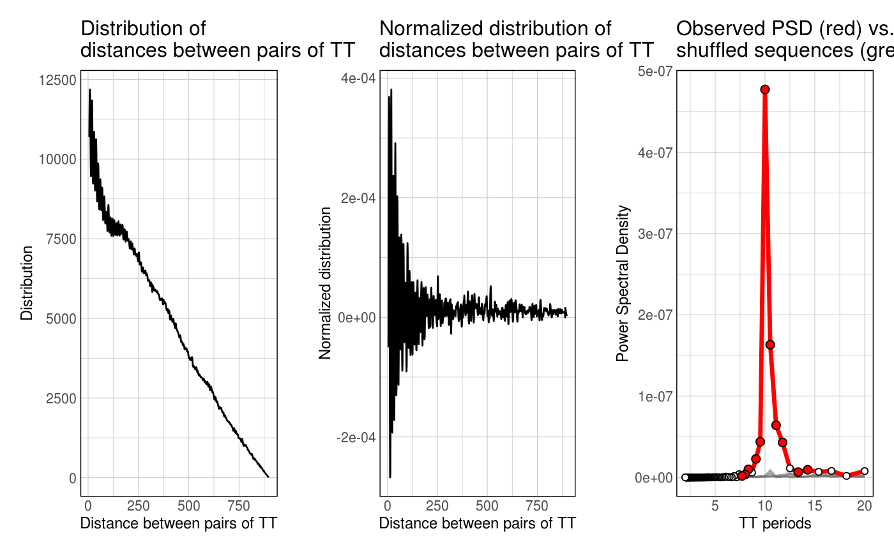

Dinucleotide periodicity over a set of Genomic Ranges
The main goal of periodicDNA is to quantify periodicity of a given k-mer in a set of sequences. getPeriodicity() can be used to achieve this. In the following example, getPeriodicity() is usually ran using a GRanges object, specifying from which genome this GRanges comes from.
library(ggplot2) library(magrittr) library(periodicDNA) # data(ce11_TSSs) periodicity_result <- getPeriodicity( ce11_TSSs[['Ubiq.']][1:500], genome = 'BSgenome.Celegans.UCSC.ce11', motif = 'TT', BPPARAM = setUpBPPARAM(1) ) #> - Mapping k-mers. #> - 523903 pairwise distances measured. #> - Calculating pairwise distance distribution. #> - Normalizing histogram vector. #> - Applying Fast Fourier Transform to the vector of distances.
The main output of getPeriodicity() is a table of power spectral density (PSD) values associated with discrete frequencies, computed using a Fast FourierTransform. For a given frequency, a high PSD score indicates a high periodicity of the k-mer of interest.
head(periodicity_result$PSD) #> freq period PSD #> 1 0.005 200.00000 6.256976e-08 #> 2 0.010 100.00000 2.204282e-08 #> 3 0.015 66.66667 2.215522e-09 #> 4 0.020 50.00000 1.108237e-08 #> 5 0.025 40.00000 4.649689e-09 #> 6 0.030 33.33333 2.661198e-08 periodicity_result$periodicityMetrics %>% '['(.$Period == 10, ) #> Freq Period PSD #> 20 0.1 10 3.633071e-06
Graphical output of getPeriodicity() can be obtained using the plotPeriodicityResults() function:
plotPeriodicityResults(periodicity_result)

The first plot shows the raw distribution of distances between pairs of ‘TT’ in the sequences of the provided GRanges. The second plot shows the decay-normalised distribution. Finally, the third plot shows the PSD scores of the ‘TT’ k-mer, measured from the normalised distribution.
Note:getPeriodicity() can also be ran directly on a set of sequences of interest as follows:
data(ce11_proms_seqs) periodicity_result <- getPeriodicity( ce11_proms_seqs, motif = 'TT', BPPARAM = setUpBPPARAM(1) ) #> - Mapping k-mers. #> - 117630 pairwise distances measured. #> - Calculating pairwise distance distribution. #> - Normalizing histogram vector. #> - Applying Fast Fourier Transform to the vector of distances. periodicity_result$periodicityMetrics %>% '['(.$Period == 10, ) #> Freq Period PSD #> 20 0.1 10 1.16806e-06
Fold Power Increase
Fold Power Increase (FPI) is a metric introduced by Pich et al., Cell 2018. It can be computed using the getFPI() function. In the following example, the FPI of TT dinucleotides at a 10-bp periodicity is computed over 200-bp long sequences randomly sampled in ce11 genome.
FPI <- getFPI( ce11_TSSs[['Ubiq.']][1:500], genome = 'BSgenome.Celegans.UCSC.ce11', motif = 'WW', n_shuffling = 5 ) #> - Calculating observed PSD #> - Mapping k-mers. #> - 3976399 pairwise distances measured. #> - Calculating pairwise distance distribution. #> - Normalizing histogram vector. #> - Applying Fast Fourier Transform to the vector of distances. #> >> Measured PSD @ 10bp is: 4.46926801883938e-07 #> - Shuffling 1/5 #> - Shuffling 2/5 #> - Shuffling 3/5 #> - Shuffling 4/5 #> - Shuffling 5/5 #> >> Calculated FPI @ 10bp is: 352.311377149726 #> Only 5 shufflings. Cannot compute accurate empirical p-values. To compute empirical p-values, set up n_shuffling to at least 100. Only FPI is returned FPI$periodicityMetrics %>% head(25) #> Freq Period PSD_observed l2FC pval fdr #> 1 0.005 200.000000 4.05e-08 -0.01913261 NA NA #> 2 0.010 100.000000 1.04e-08 0.04723769 NA NA #> 3 0.015 66.666667 1.13e-09 -1.23301391 NA NA #> 4 0.020 50.000000 3.16e-09 1.01583319 NA NA #> 5 0.025 40.000000 4.11e-09 3.21583240 NA NA #> 6 0.030 33.333333 6.48e-09 3.71417994 NA NA #> 7 0.035 28.571429 6.08e-10 -0.07874125 NA NA #> 8 0.040 25.000000 2.06e-09 0.72107464 NA NA #> 9 0.045 22.222222 1.97e-09 0.69859527 NA NA #> 10 0.050 20.000000 4.79e-09 1.83617642 NA NA #> 11 0.055 18.181818 3.67e-09 1.49773114 NA NA #> 12 0.060 16.666667 7.42e-09 1.99661054 NA NA #> 13 0.065 15.384615 2.16e-09 0.19338859 NA NA #> 14 0.070 14.285714 1.90e-08 3.48949719 NA NA #> 15 0.075 13.333333 1.55e-08 4.05645623 NA NA #> 16 0.080 12.500000 2.62e-08 4.54541927 NA NA #> 17 0.085 11.764706 7.53e-08 8.91801551 NA NA #> 18 0.090 11.111111 6.94e-08 6.52270082 NA NA #> 19 0.095 10.526316 4.17e-07 9.44978744 NA NA #> 20 0.100 10.000000 4.47e-07 8.46479640 NA NA #> 21 0.105 9.523810 7.60e-08 8.07403963 NA NA #> 22 0.110 9.090909 6.38e-08 7.55618115 NA NA #> 23 0.115 8.695652 1.96e-08 7.26792561 NA NA #> 24 0.120 8.333333 1.22e-08 5.20664302 NA NA #> 25 0.125 8.000000 8.11e-09 3.47251342 NA NA plotFPI(FPI)

Note 1
If n_shuffling >= 100, an empirical p-value is automatically computed. Note that empirical p-values are only an estimation of the real p-value. Notably, small p-values are systematically under-estimated as their lower bound is 1/(n+1).
Note 2
Note that getFPI() can also be ran using getPeriodicity() with the n_shuffling argument.
data(ce11_TSSs) periodicity_result <- getPeriodicity( ce11_TSSs[['Ubiq.']][1:500], genome = 'BSgenome.Celegans.UCSC.ce11', motif = 'TT', n_shuffling = 5 ) #> - Calculating observed PSD #> - Mapping k-mers. #> - 523903 pairwise distances measured. #> - Calculating pairwise distance distribution. #> - Normalizing histogram vector. #> - Applying Fast Fourier Transform to the vector of distances. #> >> Measured PSD @ 10bp is: 3.63307068294121e-06 #> - Shuffling 1/5 #> - Shuffling 2/5 #> - Shuffling 3/5 #> - Shuffling 4/5 #> - Shuffling 5/5 #> >> Calculated FPI @ 10bp is: 214.46762612942 #> Only 5 shufflings. Cannot compute accurate empirical p-values. To compute empirical p-values, set up n_shuffling to at least 100. Only FPI is returned periodicity_result$periodicityMetrics %>% head(30) #> Freq Period PSD_observed l2FC pval fdr #> 1 0.005 200.000000 6.26e-08 -1.43521247 NA NA #> 2 0.010 100.000000 2.20e-08 -0.63713386 NA NA #> 3 0.015 66.666667 2.22e-09 -1.80031272 NA NA #> 4 0.020 50.000000 1.11e-08 1.02534361 NA NA #> 5 0.025 40.000000 4.65e-09 -2.96617848 NA NA #> 6 0.030 33.333333 2.66e-08 1.72359874 NA NA #> 7 0.035 28.571429 6.30e-09 -1.06735745 NA NA #> 8 0.040 25.000000 1.21e-08 0.49521959 NA NA #> 9 0.045 22.222222 2.12e-08 -0.86526724 NA NA #> 10 0.050 20.000000 6.41e-08 1.47209285 NA NA #> 11 0.055 18.181818 2.94e-08 0.02466315 NA NA #> 12 0.060 16.666667 9.68e-08 0.37209613 NA NA #> 13 0.065 15.384615 6.42e-08 0.93598373 NA NA #> 14 0.070 14.285714 1.11e-07 3.95730045 NA NA #> 15 0.075 13.333333 1.26e-07 2.38398220 NA NA #> 16 0.080 12.500000 2.75e-07 5.31674402 NA NA #> 17 0.085 11.764706 5.30e-07 3.23765543 NA NA #> 18 0.090 11.111111 1.01e-06 4.54597317 NA NA #> 19 0.095 10.526316 3.46e-06 8.24377210 NA NA #> 20 0.100 10.000000 3.63e-06 7.75132731 NA NA #> 21 0.105 9.523810 8.18e-07 5.53593516 NA NA #> 22 0.110 9.090909 3.97e-07 6.08114365 NA NA #> 23 0.115 8.695652 1.62e-07 4.17510212 NA NA #> 24 0.120 8.333333 1.08e-07 8.17203149 NA NA #> 25 0.125 8.000000 6.05e-08 3.42679172 NA NA #> 26 0.130 7.692308 2.02e-08 1.65218021 NA NA #> 27 0.135 7.407407 2.01e-08 2.27371843 NA NA #> 28 0.140 7.142857 4.80e-09 -0.15078755 NA NA #> 29 0.145 6.896552 3.64e-08 1.45139598 NA NA #> 30 0.150 6.666667 8.05e-09 -0.35024233 NA NA plotPeriodicityResults(periodicity_result)

Track of periodicity over a set of Genomic Ranges
Another major aim of periodicDNA is to generate continuous linear tracks of k-mer periodicity strength over genomic loci of interest. getPeriodicityTrack() can be used to generate suck genomic tracks. In the following example,
WW_10bp_track <- getPeriodicityTrack( genome = 'BSgenome.Celegans.UCSC.ce11', granges = ce11_proms, motif = 'WW', period = 10, BPPARAM = setUpBPPARAM(1), bw_file = 'WW-10-bp-periodicity_over-proms.bw' )
When plotted over sets of ubiquitous, germline or somatic TSSs, the resulting track clearly shows increase of WW 10-bp periodicity above the ubiquitous and germline TSSs, whereas somatic TSSs do not show such increase.
data(ce11_TSSs) plotAggregateCoverage( WW_10bp_track, ce11_TSSs, xlab = 'Distance from TSS', ylab = '10-bp periodicity strength (forward proms.)' )

Session info
sessionInfo() #> R version 4.0.0 (2020-04-24) #> Platform: x86_64-pc-linux-gnu (64-bit) #> Running under: Ubuntu 14.04.5 LTS #> #> Matrix products: default #> BLAS: /home/travis/R-bin/lib/R/lib/libRblas.so #> LAPACK: /home/travis/R-bin/lib/R/lib/libRlapack.so #> #> locale: #> [1] LC_CTYPE=en_US.UTF-8 LC_NUMERIC=C #> [3] LC_TIME=en_US.UTF-8 LC_COLLATE=en_US.UTF-8 #> [5] LC_MONETARY=en_US.UTF-8 LC_MESSAGES=en_US.UTF-8 #> [7] LC_PAPER=en_US.UTF-8 LC_NAME=C #> [9] LC_ADDRESS=C LC_TELEPHONE=C #> [11] LC_MEASUREMENT=en_US.UTF-8 LC_IDENTIFICATION=C #> #> attached base packages: #> [1] parallel stats4 stats graphics grDevices utils datasets #> [8] methods base #> #> other attached packages: #> [1] BSgenome.Celegans.UCSC.ce11_1.4.2 periodicDNA_0.99.15 #> [3] BiocParallel_1.23.2 BSgenome_1.57.4 #> [5] rtracklayer_1.49.3 Biostrings_2.57.2 #> [7] XVector_0.29.3 magrittr_1.5 #> [9] ggplot2_3.3.2 GenomicRanges_1.41.5 #> [11] GenomeInfoDb_1.25.8 IRanges_2.23.10 #> [13] S4Vectors_0.27.12 BiocGenerics_0.35.4 #> #> loaded via a namespace (and not attached): #> [1] SummarizedExperiment_1.19.6 zoo_1.8-8 #> [3] xfun_0.15 lattice_0.20-41 #> [5] colorspace_1.4-1 vctrs_0.3.2 #> [7] htmltools_0.5.0 yaml_2.2.1 #> [9] XML_3.99-0.4 rlang_0.4.7 #> [11] pkgdown_1.5.1 pillar_1.4.6 #> [13] glue_1.4.1 withr_2.2.0 #> [15] matrixStats_0.56.0 GenomeInfoDbData_1.2.3 #> [17] lifecycle_0.2.0 stringr_1.4.0 #> [19] zlibbioc_1.35.0 munsell_0.5.0 #> [21] gtable_0.3.0 memoise_1.1.0 #> [23] evaluate_0.14 labeling_0.3 #> [25] Biobase_2.49.0 knitr_1.29 #> [27] scales_1.1.1 backports_1.1.8 #> [29] DelayedArray_0.15.7 desc_1.2.0 #> [31] farver_2.0.3 fs_1.4.2 #> [33] Rsamtools_2.5.3 digest_0.6.25 #> [35] stringi_1.4.6 grid_4.0.0 #> [37] rprojroot_1.3-2 cowplot_1.0.0 #> [39] tools_4.0.0 bitops_1.0-6 #> [41] RCurl_1.98-1.2 tibble_3.0.3 #> [43] crayon_1.3.4 pkgconfig_2.0.3 #> [45] MASS_7.3-51.5 ellipsis_0.3.1 #> [47] Matrix_1.2-18 assertthat_0.2.1 #> [49] rmarkdown_2.3 R6_2.4.1 #> [51] GenomicAlignments_1.25.3 compiler_4.0.0